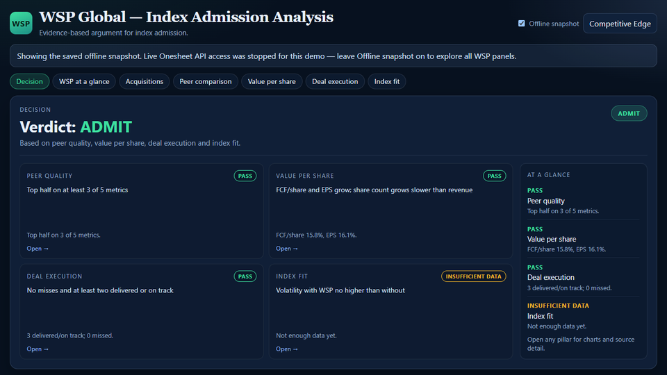

InvestTech Hackathon: should WSP join the index?
Investech Hackathon (Onesheet × Deck), Montréal, November 12, 2026. Instead of a stock pitch, we built a tool that decides with evidence whether a Canadian company belongs in a live index.
Complete a live index with Canadian companies
Onesheet runs two live indexes: REITs across borders and Serial acquirers & consolidators (15 holdings, mostly US, such as AMETEK, Waste Connections, Roper, AECOM and Jacobs). Both are built by capped market cap, then a multi-signal tilt, then a minimum-volatility optimization.
The mission: complete these indexes with Canadian companies. For serial acquirers the candidates were Constellation Software, Topicus.com, TFI International, WSP Global and Aecon Group. The organizers stressed that the pick isn’t what matters most: every stock in their indexes was chosen by a custom tool that revealed why the business is attractive. So we built one.
Live API data, checked against filings
- Onesheet API (live, primary): company profiles with ~100 metrics, each linked to a filing quote; prices; annual statements; earnings call transcripts; FX rates.
- WSP press releases: deal terms and management promises (TRC, the Arcadis proposal and smaller deals).
- Dealroom: WSP’s financing history and profiles of acquired or targeted companies.
- Earnings call transcripts: management claims, each quote verified word for word.
We set strict data-quality rules: missing data is shown as missing, never estimated; filings win over third-party data (Dealroom shows ~74,000 WSP employees, filings ~85,500, so we use filings); company-defined metrics are never compared across companies; and nothing is summed across currencies or units.
Screen first, then build the evidence
Step 1: screen all five candidates like the index
Each candidate and each current member was measured the same way over the last 3 fiscal years. A candidate passes a test if it is at least as good as the weakest quarter of current members.
| Test | Measure |
|---|---|
| Is it a serial acquirer? | Acquisition spend ÷ free cash flow |
| Does buying produce growth? | Revenue growth per year |
| Does it generate cash? | Free cash flow margin |
| Are returns good? | Return on invested capital (ROIC) |
| Is the balance sheet safe? | Net debt ÷ EBITDA |
| Does management deliver? | Earnings-call promises checked against later filings |
| Candidate | Result |
|---|---|
| Constellation Software | Passes every test |
| Topicus | Passes every financial test (no recent earnings calls in the data) |
| WSP Global | Fails only free cash flow margin |
| TFI International | Fails margins, returns, leverage and management delivery |
| Aecon | Net seller of businesses: not a serial acquirer |
Step 2: why WSP is the interesting case
Constellation and Topicus are the obvious picks. WSP is Canada’s most aggressive consolidator: it reinvested 88% of its free cash flow into acquisitions (index median 52%), with recent deals including POWER Engineers (2024), Ricardo (2025) and TRC (2026). It failed only the free cash flow margin test (7% vs a bar of 11%), a test that isn’t fair to an engineering firm, which sells people’s time. It also partly funded deals by issuing shares. So the real question became: is WSP’s growth real, and does it reach existing shareholders?
Step 3: a dashboard that answers it
Each section responds to one issue raised by the screen: peer comparison (against engineering peers, not software companies), value per share (growth vs dilution), acquisitions and deal execution (management’s promises vs later filings) and index fit (does WSP raise or lower the index’s volatility). A decision page combines four pillars into a verdict using rules set in one config.

Growth that reaches shareholders
WSP vs engineering peers already in the index
Show data table
WSP beats its engineering peers on growth: ~15% a year vs ~7% for AECOM and Jacobs, with a higher FCF margin than both. It trails them on return on capital and carries more debt, the usual trade-off of a serial acquirer, since acquisitions add goodwill and are partly debt-funded.
Did growth survive dilution? Totals vs per share (2021 = 100)
Show data table
Growth reached shareholders despite dilution: from 2021 to 2025, diluted shares grew ~3% a year, yet free cash flow per share still grew ~16% a year (vs ~19% in total) and revenue per share ~12% (vs ~15%).
- Acquisitions outran cash flow: WSP spent ~1.35x its free cash flow on acquisitions over 2021–2025, funded with debt and new shares. The TRC shares were issued at C$232.80; the stock traded around C$184 on November 12, 2026.
- Management is on track, not yet proven: leverage was 2.2x in September 2026 against a promise of under 2.0x within 12 months of the TRC closing (~February 2027). Most TRC promises are measurable only in 2027.
For index builders and investors
- Judge a company against its real peers. A margin bar set by software companies would have excluded a strong engineering consolidator.
- Check that growth reaches shareholders. Per-share measures separate real value creation from growth bought with dilution.
- Hold management to its word. Promises from earnings calls become dated checkpoints, verified against later filings.
What this can’t tell you yet
- Short price history (~100 trading days): index-fit results are indicative only.
- Simplified index method: Onesheet’s signals, caps and optimizer settings are not public.
- Window-sensitive: per-share results depend on the years chosen, and the peer findings used only AECOM and Jacobs.
- Judgment calls: decision thresholds are shown with each pillar and adjustable.
Next steps
- Load all five engineering peers and the index members’ prices.
- Run the same deep dive on Constellation and Topicus to recommend the full Canadian basket.
- Adapt the tool to the REIT index with real-estate measures (occupancy, same-property NOI, AFFO per unit).
- Re-check management promises automatically as results come out (next checkpoint: WSP Q4 2026, ~February 2027).
Not investment advice. Figures are as of November 12, 2026, from the Onesheet API, company filings and press releases, and Dealroom.